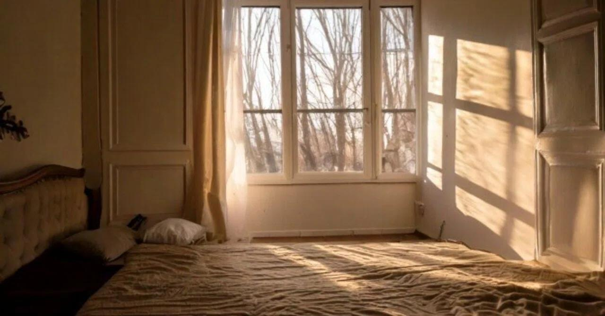

MEMORIA
Esclavos de la nostalgia
Por Juan Pablo Zamora Romero

¿En qué momento recordar lo que nos hizo felices empieza a impedirnos ser felices otra vez?
Hay canciones que dejamos de escuchar porque nos recuerdan a alguien. Fotografías que nos cuesta borrar y lugares a los que quisiéramos regresar, no porque sean especiales, sino porque alguna vez fuimos felices ahí.
A veces basta con escuchar una canción para sentir que volvimos a una etapa de nuestra vida que creíamos haber dejado atrás.
Y durante unos segundos se siente bonito.
Hasta que recordamos que ya no estamos ahí.
El pasado siempre parece un lugar mejor
Creo que tenemos una extraña capacidad para recordar lo bonito de las cosas y olvidar todo aquello que también nos hacía sufrir.
Extrañamos personas con las que quizás no éramos tan felices. Etapas en las que también teníamos problemas. Momentos que, cuando los estábamos viviendo, probablemente tampoco valorábamos tanto.
No necesariamente extrañamos lo que realmente vivimos, sino la versión que nuestra memoria ha construido de aquello.
Y cuando comparamos esa versión del pasado con nuestro presente, el presente casi siempre termina perdiendo.
Porque estamos comparando una vida real, con todas sus dificultades, contra un recuerdo del que hemos eliminado muchas de sus imperfecciones.
Cuando recordar se convierte en una costumbre
Hay algo extraño en regresar constantemente a recuerdos que sabemos que nos hacen daño.
Volvemos a escuchar las mismas canciones, revisar las mismas fotografías o imaginar conversaciones que nunca sucedieron.
A veces incluso buscamos sentir esa tristeza.
No porque disfrutemos sufrir, sino porque ese sentimiento parece ser una de las pocas cosas que todavía nos conectan con lo que perdimos.
Y poco a poco podemos empezar a confundir recordar con mantener vivo algo que ya terminó.
Como si dejar de sentir tristeza significara que aquello nunca fue importante.
Pero ¿cuánto tiempo podemos seguir viviendo emocionalmente en un lugar al que ya no podemos regresar?
Extrañar también puede ser una forma de escapar
Quizás una de las partes más difíciles de la nostalgia es aceptar que no siempre extrañamos a una persona o un lugar.
A veces extrañamos quiénes éramos cuando estábamos ahí.
Extrañamos nuestra forma de pensar, las expectativas que teníamos o la sensación de que todavía nos esperaban muchas cosas por vivir.
Y cuando el presente no se parece a lo que imaginábamos, el pasado comienza a convertirse en un refugio.
Un lugar al que regresamos mentalmente porque conocemos su historia y sabemos cómo termina.
El problema es que podemos acostumbrarnos tanto a vivir de esos recuerdos que dejamos de prestar atención a lo que todavía está sucediendo frente a nosotros.
La vida que todavía no hemos vivido
No creo que la solución sea olvidar.
Sería absurdo intentar borrar personas, lugares o momentos que nos hicieron quienes somos.
Tampoco creo que tengamos que dejar de escuchar ciertas canciones o mirar fotografías solamente porque nos provocan tristeza.
El problema aparece cuando nuestra felicidad comienza a depender de recuperar algo que ya no existe.
Cuando dejamos de conocer personas porque ninguna se parece a alguien de nuestro pasado. Cuando evitamos nuevas experiencias porque estamos convencidos de que nunca serán tan especiales como las anteriores.
Y quizás lo más triste de vivir así es que podemos pasar años extrañando una etapa de nuestra vida mientras ignoramos otra que algún día también vamos a extrañar.
No podemos regresar al pasado, pero todavía podemos construir recuerdos que algún día serán igual de importantes.
Quizás el verdadero problema de la nostalgia no es que nos haga extrañar lo que vivimos, sino que a veces nos impide vivir aquello que algún día también vamos a extrañar.
Volver a artículos